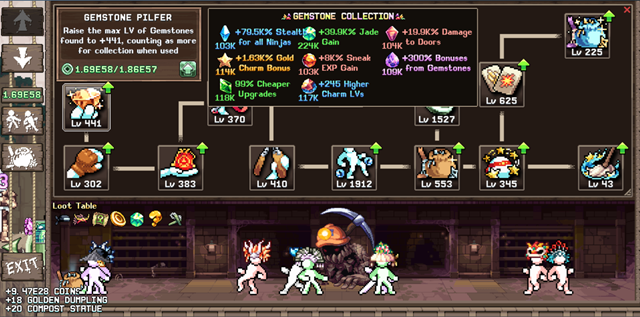
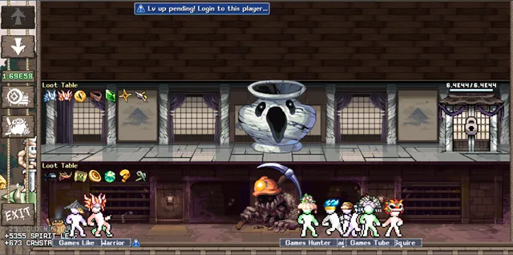
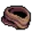
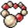

Sneaking 진행 가이드 (최적 아이템 & 우선순위)
Sneaking은 진행 단계를 초반·중반·후반으로 나눌 수 있습니다. 각각 기반 구축, 층 공략 또는 Sneaking Mastery 달성, 그리고 관련 재화·보너스 파밍에 집중합니다.


초반
처음 World 6에 진입해 초기 은신 층을 돌파하고, 모든 캐릭터를 해제하며, 은신 업그레이드나 Jade Emporium을 위한 Jade를 쌓는 단계입니다. 이 단계에서:
- 새로운 Kunai와 Nunchaku가 나올 때마다 파밍하세요.
- 새로운 골드 아이템이 나올 때마다 하나씩 파밍하세요.
- 캐릭터 한 명은 Scroll of Power와 Silk Veil, 나머지 캐릭터들은 Silk Veil과 Smoke Bomb을 장착해 층을 진행하세요.
| 캐릭터 | 핸드 아이템 | 아이템 1 | 아이템 2 |
|---|---|---|---|
| 캐릭터 1명 | Kunai 또는 필요에 따라 Nunchaku | Scroll of Power |  Silk Veil |
| 나머지 모든 캐릭터 | Kunai 또는 필요에 따라 Nunchaku | Silk Veil | Smoke Bomb |
중반 층 공략
Sneaking 진행의 가장 긴 구간으로, 첫 번째 Sneaking Mastery(World 4 Rift에서 해제)를 달성하고 대부분의 Charm에 접근할 수 있게 된 시점입니다. 이 단계부터 Lotus Flower 보너스가 필요하므로 모든 캐릭터를 항상 같은 층에 배치해야 합니다. 이 단계에서:
- 새로운 Nunchaku가 나올 때마다 파밍하세요.
- 새로운 골드 아이템이 나올 때마다 하나씩 파밍하세요(새것이거나 새로운 최대치에 도달한 경우).
- 보석·Jade·Charm 파밍을 정기적으로 교체하며 은신 능력을 강화한 뒤 문을 돌파하세요.
- 벽에 막힐 때마다 이전 층으로 돌아가 주요 은신 강화 요소(Gem, Jade, Charm)를 업그레이드하세요. Rosaries와 Silk Veil은 곱셈 보너스라 가장 높은 은신 효과를 주는 반면 다른 Charm 조합은 덧셈 방식입니다. Lotus Flower 캐릭터들은 자신의 은신 수치가 낮아 많은 시간을 쓰러진 상태로 보내며 다른 캐릭터의 은신을 강화하는 희생 역할을 합니다.
| 캐릭터 | 핸드 아이템 | 아이템 1 | 아이템 2 |
|---|---|---|---|
| 캐릭터 1명 | 필요에 따라 Glove 또는 Nunchaku | Scroll of Power |  Rosaries |
| 캐릭터 5명 | 필요에 따라 Glove 또는 Nunchaku | Rosaries | Silk Veil |
| 캐릭터 4명 | 필요에 따라 Glove 또는 Nunchaku | Lotus Flower | Lotus Flower |
중반 단계에서 큰 장벽에 부딪힐 경우 새로 해제된 은신 보석 레벨 올리기에 집중하세요. 모든 보석이 큰 강화 효과를 가지지만 Garnet(문 데미지)과 Topaz(은신 경험치)는 우선순위가 낮습니다. 보석을 먼저 10,000까지 올린 뒤 최종적으로 101,000(실질적인 최대 보너스)까지 올리는 것을 권장합니다. 낮은 은신 레벨에서 보석이나 Charm을 파밍할 때는 아이템 획득을 최대화하기 위해 아래 구성을 사용하세요. 탐지율 0%를 유지하면서 더 많은 캐릭터에 이중 Meteorite를 장착할 수 있다면 아이템을 더 얻을 수 있으며, 이는 정기적인 은신 확인이 필요합니다:
| 캐릭터 | 핸드 아이템 | 아이템 1 | 아이템 2 |
|---|---|---|---|
| 캐릭터 6명 | Glove | Meteorite | Meteorite |
| 캐릭터 4명 | Glove | Lotus Flower | Lotus Flower |
후반 파밍
처음 4~5개의 Sneaking Mastery를 해제하고 모든 보석을 101,000까지 올렸다면 다음 중 하나로 전환하세요:
- Pristine Charm 파밍: 탐지 확률 0%인 낮은 Sneaking Mastery 레벨에서 위의 이중 Meteorite 구성으로 모든 캐릭터가 Pristine Charm을 파밍하세요. Pristine Charm은 Sneaking Mastery의 영향을 받지 않습니다. 추가 인벤토리 공간을 확보하려면 Gold Scroll, Gold Beads, Gold Q Mark를 제외한 모든 골드 Charm을 삭제한 뒤 나중에 다시 파밍하세요.
- Jade Coin 파밍: 모든 Pristine Charm을 모은 후 Ninja Knowledge 구매를 위한 Jade를 파밍하세요. 중반 층 공략 구성(Power Scroll/Rosaries, Rosaries/Silk Veil, Lotus Flower/Lotus Flower)으로 가장 좋은 비율을 얻을 수 있습니다.
- Sneaking 레벨 파밍: 최고 마스터리 레벨의 고스트 층(층 0)에 캐릭터 한 명을 이중 Black Belt로 배치해 대규모 은신 경험치를 얻으세요. 이는 은신 속도를 크게 높여 중반 층 공략에도 유용하며, 대형 연금술 버블 Level Up Gift를 수백 번 트리거해 무료 Gem을 획득할 수 있습니다.
- 추가 Mastery 진행: Mastery 5 이후를 진행하려면 World 7에 도달해 Pillar Reef의 다섯 번째 업그레이드에서 Funeral Flowers를 해제해야 합니다. 해제 후에는 모든 캐릭터에 노란 벨트를 장착해 기절 때까지의 행동 속도 시간을 줄임으로써 층을 진행합니다. 기절이 충분히 쌓이면 은신 수치가 높아져 층을 하나씩 돌파할 수 있습니다.
| 캐릭터 | 핸드 아이템 | 아이템 1 | 아이템 2 |
|---|---|---|---|
| 캐릭터 10명 | Glove | Yellow Belt | Yellow Belt |
Sneaking 팁
- 초기 진행 (캐릭터 해제): 첫 번째 은신 목표는 높은 층에 있는 캐릭터들을 해제해 더 많은 캐릭터가 은신 행동을 수행하도록 하는 것입니다. 단, 묶인 캐릭터를 해제하거나 문을 여는 데 24시간 이상 걸린다면 먼저 탐지 확률을 낮추는 데 집중하세요.
- 핸드 아이템: Kunai는 캐릭터 해제, Nunchaku는 문 파괴, Glove는 아이템 및 Jade 탐색 행동 속도를 높입니다. 캐릭터당 핸드 아이템은 하나만 장착 가능하며, 해당 행동이 없으면 아이템·Jade 탐색으로 돌아갑니다.
- Charm 종류: 은신 인벤토리에 보관 시 패시브 보너스를 주는 골드 Charm, 각 캐릭터가 장착 가능한 일반 Charm, 청구 시 Idleon 계정 전체 보너스를 주는 희귀한 Pristine Charm이 있습니다.
- Jade 현명하게 사용하기: Jade는 캐릭터가 시간에 따라 얻는 은신 재화로 은신 능력을 강화하지만, Jade Emporium에서 계정 업그레이드에도 사용됩니다. 항상 Jade 획득을 먼저 향상시키는 은신 강화가 우선순위이며, Jade Emporium 구매는 전체 Jade 획득량의 1~2일치에 해당할 때만 권장합니다. 일반적으로 높은 층일수록 Jade 획득량이 많지만 은신 속도에 따라 다르므로 항상 캐릭터를 들어올려 자신의 수치를 확인하세요.
- Wind Walker 탤런트: 은신 인터페이스를 열기 전에 Wind Walker 은신 탤런트가 높은 레벨로 설정된 두 번째 탤런트 프리셋을 사용해 제공 보너스를 최대화하세요.
- Ninja Knowledge 우선순위: 은신의 거의 모든 Jade 업그레이드가 유용합니다(Star Sweeping 제외). 가장 저렴한 업그레이드를 구매하되, 모든 캐릭터가 해제되면 Kunai Knowledge 구매는 중단해도 됩니다.
- 인벤토리 정리 및 정기적 귀환: 인벤토리가 가득 차면 Charm이나 다른 아이템들이 소실되어 진행에 방해가 됩니다. 자동 쓰레기 아이템 기능을 켜세요(은신 보석, Pristine Charm, 은신 모자는 삭제되지 않습니다). 특정 Charm을 위해 이전 층으로 정기적으로 돌아가는 것도 좋은 전략입니다. 최대 레벨은 은신 진행에 따라 꾸준히 증가합니다.
- 은신 레벨 극대화: 은신 레벨은 Way of Stealth Ninja Knowledge 업그레이드 덕분에 전반적인 은신에 최고의 강화 중 하나입니다. Scroll of Power를 캐릭터들 사이에서 돌리면 모든 캐릭터를 레벨업하는 데 도움이 되며, 결국 높은 Sneaking Mastery의 층 0(고스트 층)에서 이중 Black Belt를 사용하면 됩니다.
- 외부 은신 강화: Sneaking은 대부분 독립적인 스킬이지만 진행에 도움이 되는 강력한 외부 보너스가 몇 가지 있습니다. 가장 큰 것은 Stealth Statue, Cavern Lamp 업그레이드, Farming Land Rank 업그레이드입니다.
- Pristine Charm: Pristine Charm은 중복 드롭이 가능하므로, 중복 확률이 낮을 때 자연스럽게 대부분의 Pristine Charm을 먼저 모으면 Gem을 아낄 수 있습니다. 거의 다 모아 중복이 문제가 되기 시작하면 유용한 나머지 몇 개를 Gem Shop에서 구매하세요.
- 은신 심볼: World 7에서 해제되는 심볼은 높은 Sneaking Mastery를 위한 중요한 강화로, 인벤토리 또는 최종적으로 캐릭터 인벤토리의 특정 은신 슬롯을 강화합니다. 성공 확률은 인벤토리 상단 행에서 왼쪽에서 오른쪽 순서로 높으므로 모든 골드 Charm을 이 순서로 배치하세요.